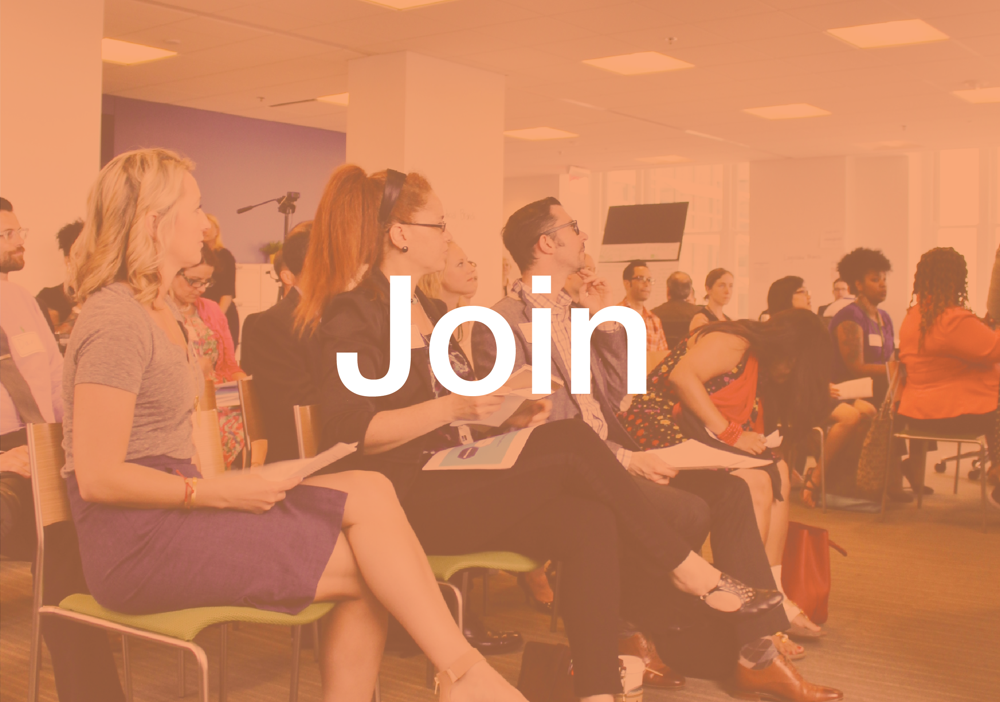

<section class="how-to-get-connected">
  <div class="site-width">
    <h1>How to Get Connected</h1>
    <article>
      <a href="../playbook.html"> 
      <h1>Playbook</h1></a>
      <p>Six key guiding principles or “plays” for public sector innovation</p>
    </article>
    <article>
      <a href="../stories.html"> 
      <h1>Stories</h1></a>
      <p>Real-world stories of where innovation is happening and working in the government</p>
    </article>
    <article>
      <a href="../join-us.html"> 
      <h1>Join</h1></a>
      <p>Opportunities to join the Community of Practice, Innovation Ambassadors, and upcoming events</p>
    </article>
  </div>
</section>
